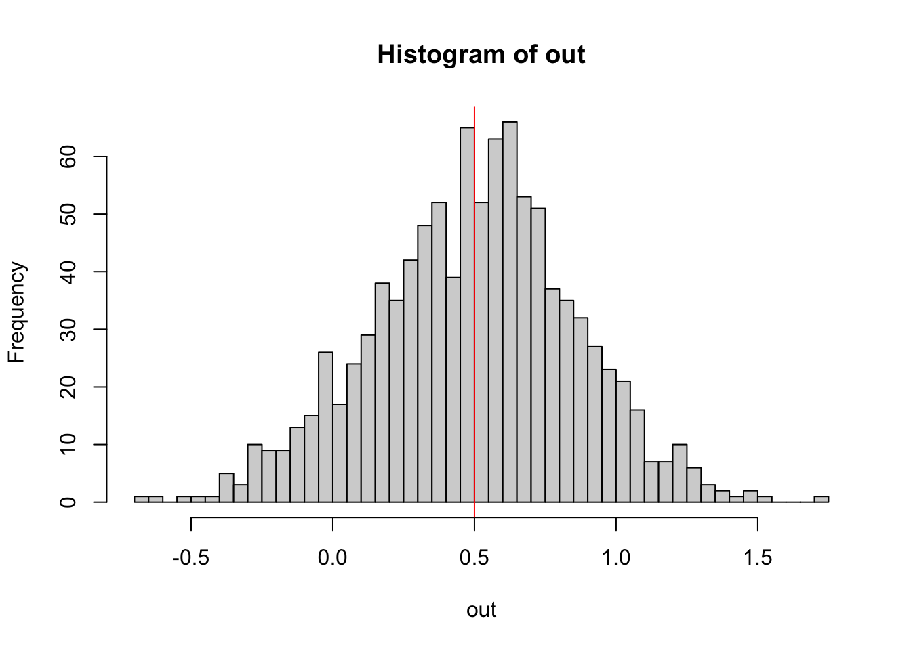
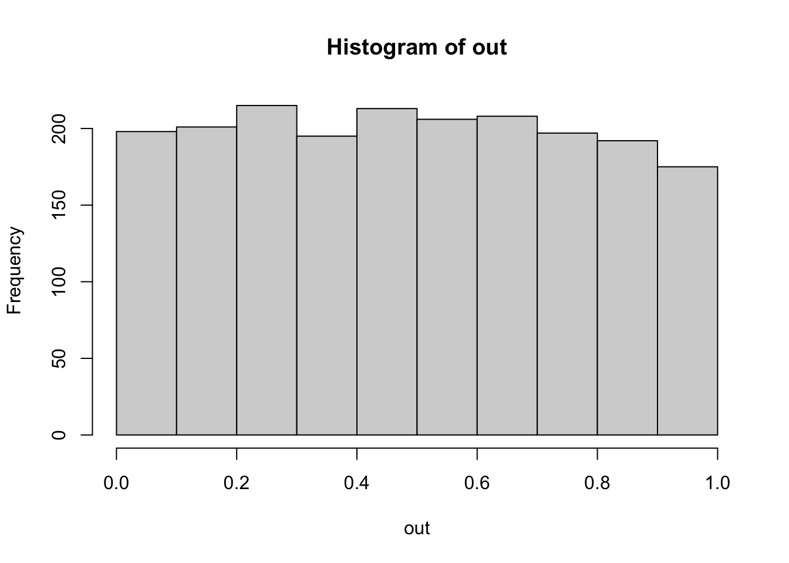

This chapter brings together what we have learned in this book as a workflow for analyzing your own data, from the scientific question to the methods and results sections of a paper. The seven steps are the same as in the overview at the beginning of the book (Section 1.1.2). Each step links to the sections where the respective topic is explained. If you have a concrete problem with your analysis, the table in the quick reference (Section B.1) points you to the relevant section.
12.1 The workflow at a glance
Question and goal. Is your goal to estimate a causal effect, to predict, or to explore? The answer determines which variables you include and whether model selection is appropriate (Chapter 7, Chapter 8).
Design and data. What is the replicate (experimental unit), and how are the observations grouped (sites, plots, individuals, years)? Get an overview of the missing values (Chapter 6) and of the data: distribution of the response, range of and correlations between the predictors (Section 2.8). If you are still planning the study, see the section on design and power analysis (Section 12.7).
A-priori model. Choose the distribution from the type of response (Table 12.1), the predictors from the question (for causal questions with a causal diagram, Section 7.3), and the random effects and correlation structures from the design (Table 12.2). Center and scale numeric predictors if needed (Section 2.9). Specify this model before you look at the results.
Report the analysis so that others can understand and reproduce it (Section 12.5).
12.2 From question to model
All models in this book are special cases of the general model shown in Section 1.1.1: a linear predictor (fixed effects, possibly with splines or nonlinear functions, plus random effects), a link function, a distribution and, if needed, a correlation structure. Building the a-priori model means choosing each of these components.
The distribution follows from the type of response:
Table 12.1: Which model for which type of response? For more R code, see Table B.4.
The predictors follow from the goal of the analysis:
For a causal question, write down a causal diagram, adjust for confounders, but not for colliders, and for mediators only if you want the direct effect (Section 7.3). Only the effect of interest can be interpreted causally (Section 7.4.1).
For prediction, the goal is the model with the best out-of-sample performance, e.g. via AIC, cross-validation or shrinkage (Section 8.2, Section 8.4, Section 8.2.3).
An exploratory analysis can generate hypotheses, but its p-values are not valid tests of these hypotheses (Section 8.3.2).
The random effects and correlation structures follow from the design:
Table 12.2: Which random effects and correlation structures for which design? For how to derive the random effects from the study design, see Tip 4.1; for the syntax, see the quick reference (Section B.5).
rule of thumb: fixed effect if fewer than about 5-10 levels; but a random effect can also work if you are interested in the population-level effect (simplify after a singular fit)
Packages to fit these models (see the quick reference in the appendix, Appendix B, for the syntax):
base R (stats): lm, glm.
lme4: mixed models, lmer, glmer.
mgcv: GAMs.
nlme: variance and correlation structures for linear (mixed) models, using gls and lme.
glmmTMB: generalized linear mixed models with variance and correlation structures and zero-inflation.
Alternatively, you could move to Bayesian estimates with brms, which can fit all of these models, makes it easier to include shrinkage, and makes p-value and degrees-of-freedom problems less visible (see the Bayesian workflow in Hartig (2024)).
Check the fitted model with residual plots, for GLMs and mixed models with the simulated residuals of DHARMa (Section 2.4.2, Section 9.3.1), and adjust the model if you find a problem. Work through the problems roughly in the order of the table: a wrong functional form or distribution can create apparent dispersion or correlation problems.
Table 12.3: Typical problems in residual checks and what to do about them.
Dispersion test significant, ratio > 1 (counts, k/n data)
overdispersion
negative binomial or beta-binomial family, observation-level random effect, or dispersion model; if excess zeros are the cause, treat zero-inflation first
Note that since version 0.5.0, DHARMa simulates the residuals of mixed models conditional on the fitted random effects by default. To detect patterns at the level of the groups (e.g. spatial autocorrelation between sites), use simulateResiduals(..., simulateREs = "unconditional"). Note, however, that unconditional residuals of a model with a fitted correlation structure still contain the full autocorrelation, so they cannot show whether this structure is adequate (see the subsection on conditional residual checks in Section 11.2).
12.4 Inference
Once the model is final, you can test hypotheses and calculate confidence intervals. The main options:
Table 12.4: Tests and confidence intervals for the main model types. For mixed models in more detail, see Table 4.1.
Model
Tests for single terms
Confidence intervals
Section
lm, gls
t-tests (summary), F-tests (car::Anova; anova is sequential)
Remember that p-values and confidence intervals are only valid for hypotheses that were specified before looking at the data. After model selection, they are too optimistic (Section 8.3.2). For nonlinear link functions, report effects on the response scale (Caution 9.1), and for mixed models, decide whether you want conditional, unconditional or marginal predictions (Tip 4.3).
12.5 Reporting
The methods section should allow others to reproduce your analysis:
the question, and whether the analysis was planned in advance or exploratory;
the response, the distribution and link, and the model formula, including the reasons for the random effects;
the handling of missing values, transformations, centering and scaling;
which residual checks you did (e.g. DHARMa simulated residuals: uniformity, dispersion, zero-inflation), and how you adjusted the model;
how model selection was done, if any;
how p-values and confidence intervals were calculated (test type, e.g. Wald or likelihood ratio test, and CI method, e.g. profile or bootstrap; for mixed models also the estimation method, ML or REML);
the software and package versions (and citations, e.g. citation("glmmTMB")).
Closely related is the reproducibility of your analysis, which reviewers and journals increasingly expect:
Do the entire analysis in a script (or a Quarto / R Markdown document), from reading the raw data to the final figures, not in the console. Never change the raw data by hand; do all corrections in the script. Use relative paths (e.g. with an RStudio project), so that the script also runs on another computer.
Set a seed (set.seed()) at the top of the script and before each step that uses random numbers (simulations, bootstrap, simulated LRTs, cross-validation, imputation), so that you and others get the same results. DHARMa fixes its own seed by default (argument seed of simulateResiduals()), so its residuals are reproducible anyway.
Record the R and package versions with sessionInfo() (results can change between versions, even for the same seed). To reproduce them later, use the renv package (renv::init(), renv::snapshot() to write the versions to renv.lock, renv::restore() to reinstall them).
Deposit the data (with a short description of all columns), the code and the renv.lock file together with the paper, e.g. on Zenodo or Dryad, and cite the DOI in a data and code availability statement.
The results section should report effect sizes with confidence intervals, on an interpretable scale, together with the number of observations and groups, and, where appropriate, effect plots with confidence intervals (Section 2.3). For GLMs, the coefficients are on the scale of the link function, so they should be translated (Table 12.5):
Table 12.5: How to report coefficients for different link functions.
Link
Meaning of a coefficient \(\beta\)
What to report
identity (lm, normal)
change of y per unit of x
\(\beta\) with CI, in units of y
log (Poisson, negative binomial, Gamma)
y is multiplied by \(e^\beta\) per unit of x
rate ratio \(e^\beta\) with CI, or the percent change \((e^\beta - 1) \cdot 100\)
logit (binomial)
the odds are multiplied by \(e^\beta\) per unit of x
odds ratio \(e^\beta\) with CI
any link
predictions on the scale of the response
predicted means with CIs, e.g. emmeans(fit, ~ x, type = "response"); for mixed models, say whether these are unconditional (random effects at zero) or marginal predictions (Tip 4.3)
For example, for the number of warp breaks in a weaving experiment (negative binomial GLM), the effects as rate ratios with CIs and the predicted means per tension level are:
library(MASS)library(emmeans)fit =glm.nb(breaks ~ tension + wool, data = warpbreaks)exp(cbind(estimate =coef(fit), confint(fit))) # rate ratios with 95% CI
emmeans(fit, ~ tension, type ="response") # means on the response scale
tension response SE df asymp.LCL asymp.UCL
L 35.9 3.03 Inf 30.4 42.3
M 26.6 2.33 Inf 22.4 31.6
H 21.5 1.95 Inf 18.0 25.7
Results are averaged over the levels of: wool
Confidence level used: 0.95
Intervals are back-transformed from the log scale
A results sentence could then read: “Compared to low tension, the number of breaks was 26% lower at medium tension (rate ratio 0.74, 95% CI 0.58-0.94) and 40% lower at high tension (0.60, 0.47-0.76; negative binomial GLM, n = 54, wool type held constant, profile-likelihood CIs).” For a mixed model, also state the number of observations and groups per random effect and the estimated random effect standard deviations (VarCorr()), e.g. “480 observations from 24 sites; standard deviation between sites 0.4 on the log scale”. For a numeric predictor, calculate predictions with predict(..., se.fit = TRUE) on the link scale, add ± 1.96 standard errors, back-transform with the inverse link (e.g. exp() for the log link), and plot them together with the data (Section 2.11; for mixed models, Section 4.5.2). An example of a methods and results text for an ANOVA is in Section 3.2.4.3.
CautionCommon mistakes in reporting
reporting p-values without effect sizes and confidence intervals;
reading a non-significant result as “no effect” (look at the confidence interval instead);
concluding that an effect differs between groups because it is significant in one group but not in the other, instead of testing the difference (Note 3.1);
interpreting GLM coefficients as if they were on the response scale;
reporting a model found by model selection as if it had been planned in advance (Section 8.3.2);
using causal language for a predictive or exploratory analysis (Chapter 7).
12.6 Thoughts about the analysis pipeline
In statistics, we rarely use a simple analysis. We often use an entire pipeline, consisting, for example, of the workflow sketched in Section 12.1. What we should constantly ask ourselves: Is our pipeline good? By “good”, we typically mean: If 1000 analyses are run in that way:
What is the typical error of the estimate?
What is the Type I error (false positives)?
Are the confidence intervals correctly calculated?
…
The way to check this is to run simulations. For example, the following function creates data that follows the assumptions of a linear regression with slope 0.5, then fits a linear regression, and returns the estimate
getEstimate =function(n =100){ x =runif(n) y =0.5* x +rnorm(n) fit =lm(y ~ x) x =summary(fit)return(x$coefficients[2, 1]) # Get fitted x weight (should be ~0.5).}
The replicate function allows us to execute this 1000 times:
Plotting the result, we can check whether the linear regression is an unbiased estimator for the slope.
hist(out, breaks =50)abline(v =0.5, col ="red")

“Unbiased” means that, while each single estimate has some error, the errors average out: the mean of many estimates is the true value (up to simulation error).
Explicitly calculating these values
Bias
mean(out) -0.5# Should be ~0.
[1] -0.001826401
Variance / standard deviation of the estimator
sd(out)
[1] 0.3587717
To check p-values, we could run:
set.seed(12345)getEstimate =function(n =100){ # Mind: Function has changed! x =runif(n) y =rnorm(n) # No dependence of x! Identical: y = 0 * x + rnorm(n). fit =lm(y ~ x) x =summary(fit)return(x$coefficients[2, 4]) # P-value for H0: Weight of x = 0.}out =replicate(2000, getEstimate())hist(out) # Expected: Uniformly distributed p-values. -> Check.

mean(out <0.05) # Type I error rate: fraction of p-values < 0.05 when H0 is true; about 0.05 for a calibrated test
[1] 0.0515
# Explanation of syntax: Logical vectors are interpreted as vectors of 0s and 1s.
To check the properties of other, possibly more complicated pipelines, statisticians will typically use the same technique. I recommend doing this! For example, you could modify the function above to have a non-normal error. How much difference does that make? Simulating often beats recommendations in the books!
12.7 Experimental design and power analysis
All we have learned in this course directly informs experimental and research design, be it controlled experiments, quasi-experiments or observational studies.
As a start, note our discussions of causality (Chapter 7) and model selection (Chapter 8):
First of all, research design needs a goal: do you want to design for prediction or (causal) inference
If you are after causal inference, randomize or hold constant what you can; measure what you cannot control so that you can adjust for it. It is often possible even in observational settings to control confounders, e.g. by selecting the observations in a way that confounders are at the same value. This can be useful because, as we discussed in the section on collinearity (Section 2.8), adjusting for collinear variables is possible, but costs power.
In experimental settings, blocked designs where blocks will be later treated as a random effect (see Chapter 4) are standard
If you have decided on the selection of variables, treat your analysis as fixed. Perform a pilot study and/or a power analysis for the entire study.
The cleanest way to do a power analysis for any model - not just the textbook cases - is by simulation: assume an effect size, simulate many datasets, fit your planned model to each, and count how often the effect comes out significant. That fraction is the power.
getP =function(n =50, effect =1){ x =runif(n) y = effect * x +rnorm(n) # assumed true effect + noisesummary(lm(y ~ x))$coefficients[2, 4]}mean(replicate(1000, getP(n =50, effect =1)) <0.05) # power at n = 50 (about 0.5)
[1] 0.507
To find the sample size for, say, 80% power, wrap this in a loop over n (here, roughly 100 observations are needed). Note that the assumed effect should be the smallest biologically relevant effect (or a plausible one from the literature), not the effect observed in the data: power calculated from an observed effect is uninformative. The same recipe works for GLMMs, spatial models, etc. - just swap the data-generating step and the fitted model, which is why simulation beats closed-form power formulas once you leave the simple LM.
12.8 Next steps
This book covered the core GLMM toolbox. Natural next steps are the fully Bayesian treatment of these models (brms / Stan), which sidesteps several of the degrees-of-freedom and p-value problems we flagged along the way, and hierarchical models such as error-in-variable, occupancy and state-space models (all covered in Hartig (2024)); machine-learning approaches when the goal is purely prediction; and domain-specific extensions such as joint species distribution models, survival / time-to-event models, and structural equation models - each of which builds directly on the ideas developed here.